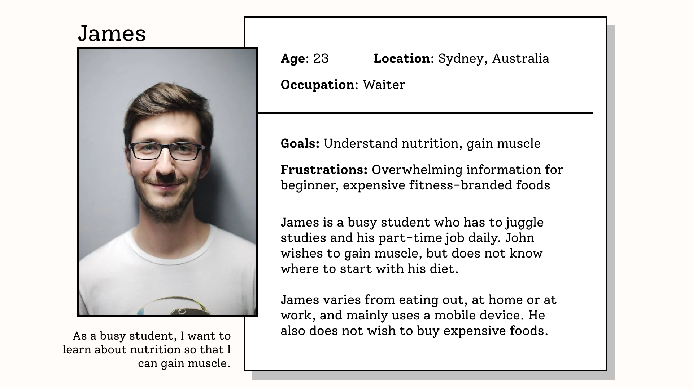
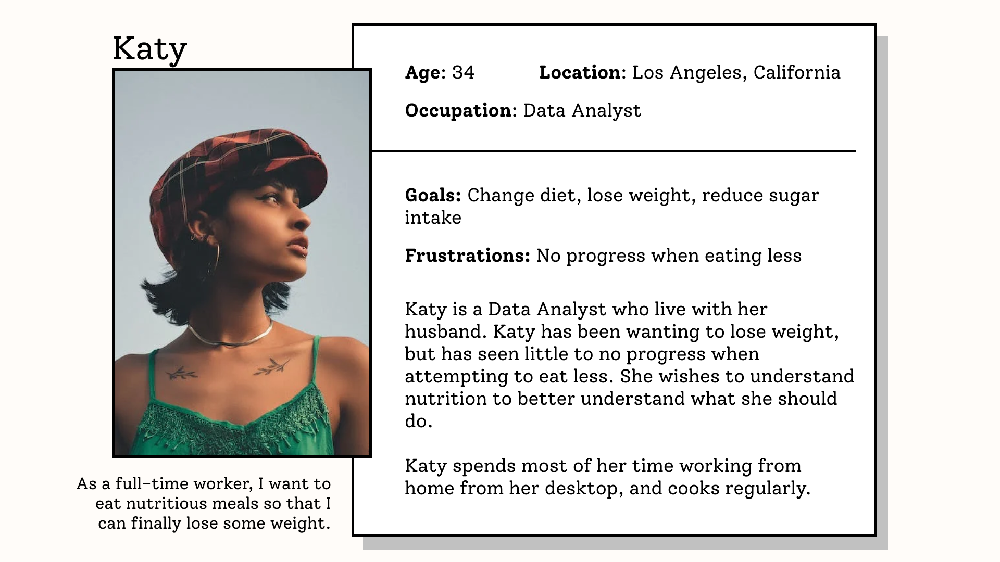
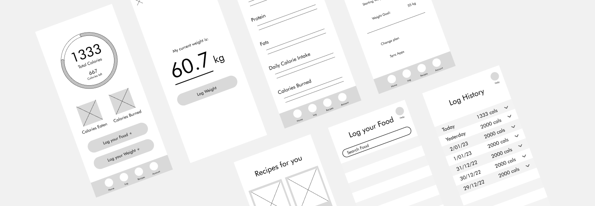
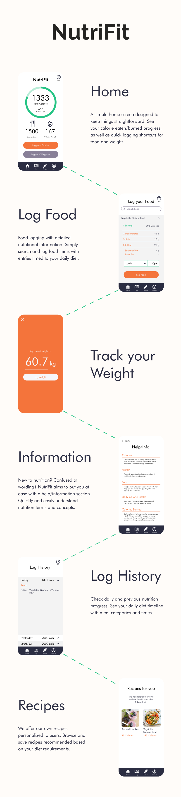

NutriFit is an app designed to help introduce new nutrition enthusiasts into tracking macros.
Along with the ability to log calorie and weight progress, NutriFit offers personalized recipes for
users as well as an information feature to help new users understand nutrition terms and concepts.
Project
Google UX Certificate
Timeline
December 2022 – January 2023
Deliverables
Mobile application
Problem
Nutrition and macro–tracking apps tend to be confusing and intimidating, especially for
users
who are new to the process.
Goal
Create an app that allows macro–tracking in a simple and effective manner, whilst
assisting
current and new health enthusiasts to understand nutrition.
Pain Points
Through user research I identified user pain points that were common amongst participants. Users feel
intimidated and confused when using macro–tracking apps, with unfamiliar jargon of nutrition
concepts and cluttered visual layouts that contribute to a negative user experience.
Personas


Problem Statement
Katy is a busy data analyst who needs a way to understand and track nutrition to implement a
healthy diet and lose weight.
Solutions
Create an information section
Recommend recipes based on user preferences
Implement food and weight tracking
Wireframes

Style Guide
Outcome

Takeaways
This case study allowed me to gather everything I have learnt in the Google UX Certificate program
and apply them into a final project.
As a beginner to nutrition myself, I was able to easily empathize with users pain points and
understand their experiences with other apps. However I also learnt that valuable feedback and
research may
arise from problems I don't expect myself. This is vital as a UX Designer to understand that all
users
experience products differently.